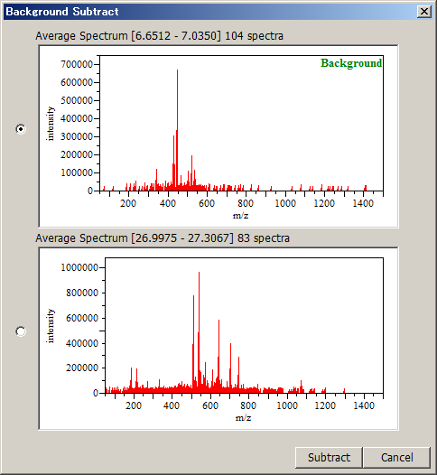

You can remove unwanted background from a spectrum.
Open both the background spectrum and the spectrum from which you want to subtract that background spectrum.
Select [Processing] in the menu bar and then select [Basic Data Manipulation] > [Background Subtract] from the drop down menu.
The Background Subtract dialog appears.
The Background Subtract dialog can also be displayed by clicking the
 icon in the toolbar.
icon in the toolbar.
Select the background spectrum.
Click [Subtract].